Aviso de spoilers. Este detonado acompanha a campanha completa de Remothered: Red Nun's Legacy, da chegada à Villa Ashmann até o final. Ele traz as soluções dos enigmas e dicas para fugir das perseguidoras. Os nomes dos itens seguem a versão em português do jogo. Quando ajuda a reconhecer placas e salas, o nome em inglês aparece entre parênteses. As imagens são da gameplay do Bora de Play.
Como usar este detonado
Primeira partida. Siga os capítulos na ordem. O jogo não tem combate de verdade, então o mais importante é saber para onde ir antes de abrir uma porta. Cada metrônomo salva o jogo; use-o sempre que passar por um. Ande com a lanterna apagada quando puder: as freiras enxergam a luz de longe.
Já está jogando? Procure na tabela o ponto em que você travou e vá direto para a solução.
| Onde travei | Ir para |
|---|---|
| Não sei como entrar na villa | Chegada à Villa Ashmann |
| Caixinha de música ou Medalha de Pombas | Sala delle Meraviglie e biblioteca |
| Planta bloqueando a porta ou pilares que giram | Convento e primeiro enigma dos pilares |
| Combinação do cofre | Cofre: 73, 31, 52 |
| Espelhos, quarto de Lindsay ou pilares com espelho | Segredos nos espelhos |
| Ala residencial, porta do Eclipse ou a Noiva | Ala residencial |
| Rodando em círculos sem achar a saída | A escada que confunde |
| Ordem das marionetes | Monta-cargas e marionetes |
| Pilares das chamas ou porta alquímica | Pilares das chamas e porta alquímica |
| Corda, polia e trecho final | Catacumbas e final |
Rota da campanha
- Chegada à Villa Ashmann
- Sala delle Meraviglie e biblioteca
- Convento e primeiro enigma dos pilares
- Cofre da família e a porta da frente
- Segredos nos espelhos
- Ala residencial e a Noiva
- Adega, metrônomo quebrado e mariposas
- Monta-cargas e marionetes
- Pilares das chamas e porta alquímica
- Catacumbas e final
Como sobreviver às perseguidoras
- Esconda-se cedo. Sofás, armários e camas servem de esconderijo. Fique parado até a música tensa acabar e os passos se afastarem.
- Lanterna apagada. Elas veem a luz do fim do corredor. Acenda só para ler ou procurar itens.
- Itens de defesa. Tesouras, pregos e objetos arremessáveis servem para escapar quando uma delas agarra você. Armas improvisadas, como pás e barras de ferro, empurram a inimiga e também bloqueiam golpes, mas se gastam com o uso. Você carrega um item de cada tipo por vez.
- Não corra à toa. Correr faz barulho e atrai quem estiver por perto. Corra só quando já tiver sido vista.
1. Chegada à Villa Ashmann
Objetivo: entrar na villa e passar pela primeira visita ao convento.
- As portas da frente estão emperradas. Contorne a entrada pela esquerda até a grade no chão, desça e siga pela passagem subterrânea. Ao sair do fosso, você já está dentro da villa.
- Leia o recorte de jornal sobre o desaparecimento de Agata. Ao ouvir alguém se aproximar, esconda-se debaixo do móvel destacado e espere.
- Interaja com o metrônomo da sala. Ele leva Susan ao convento. Pegue a Chave Enferrujada (a etiqueta diz Glória) perto da cama e siga pelo corredor com os berços até a cena da Freira Vermelha.
- De volta à villa, o tutorial explica que os metrônomos salvam o jogo e destravam poderes. O primeiro deles permite se esconder debaixo de sofás.
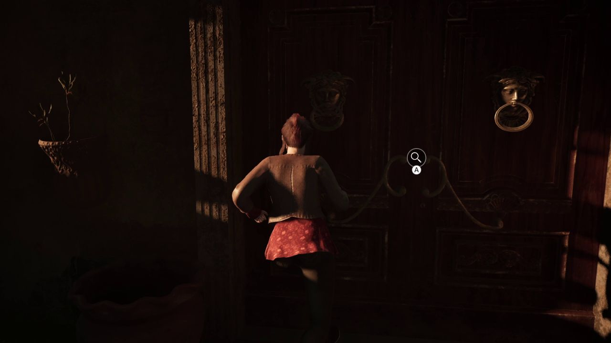
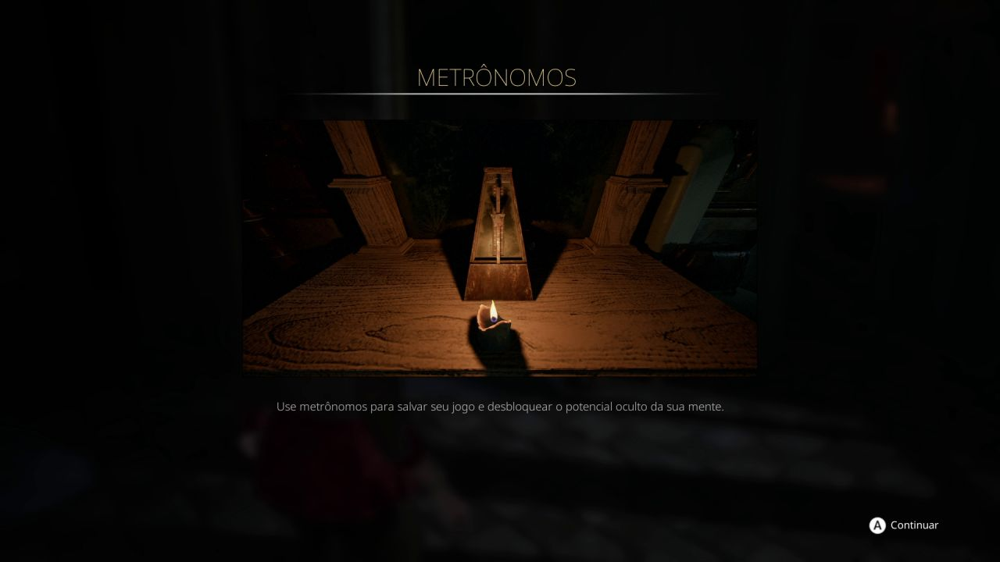
2. Sala delle Meraviglie e biblioteca
Objetivo: montar a caixinha de música e levar a medalha ao metrônomo.
| Onde | O que faço | Como sei que funcionou |
|---|---|---|
| Galeria de arte, armário perto da lareira | Pegue a chave da porta da rosa dos ventos. | A porta com a rosa dos ventos abre. |
| Sala delle Meraviglie (sala das maravilhas) | Abra o livro azul da penteadeira para achar a chave da biblioteca. | A biblioteca fica acessível. |
| Biblioteca, mesa do projetor | Leia o bilhete com a combinação do cofre. Ele fica salvo no inventário. | O projetor avisa que faltam os slides. Eles vêm no capítulo 4. |
| Andar de cima da biblioteca | Pegue o Bonequinho de Noivo na mesinha. Volte pelo balcão, porque a porta de baixo se tranca. | O item aparece no inventário. |
| Caixinha de música na galeria | Coloque o noivo ao lado da noiva. | A gaveta solta a Medalha de Pombas. |
| Metrônomo da gaiola, no salão de recepção | Use a medalha no metrônomo preso na gaiola. | Susan volta ao convento. |
Durante essa área, uma freira passa a vigiar a biblioteca pelo mezanino e outra desce a escada. Na gameplay, o encontro mais perigoso foi ao sair de um armário com ela parada na porta. Antes de sair do esconderijo, espere a música baixar.
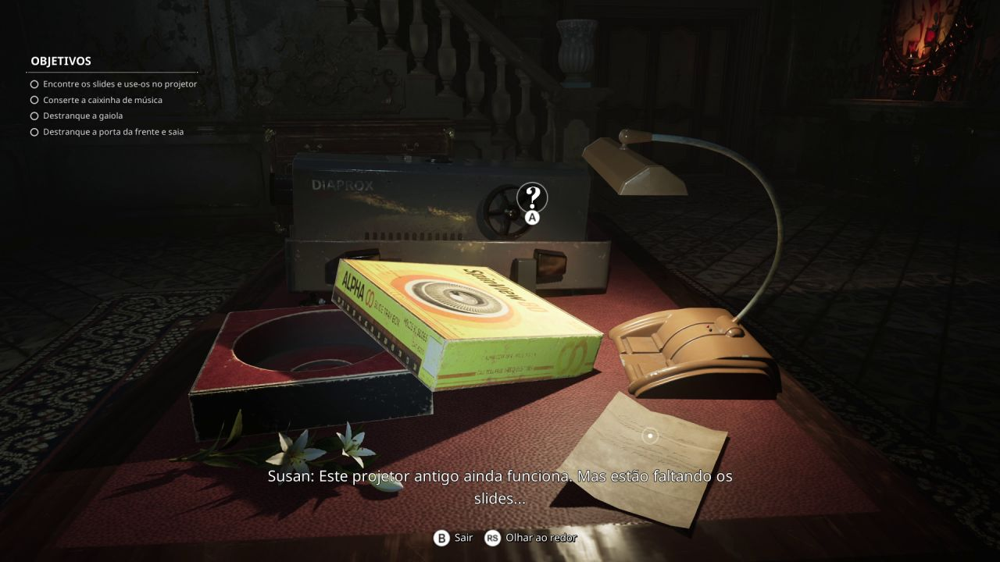
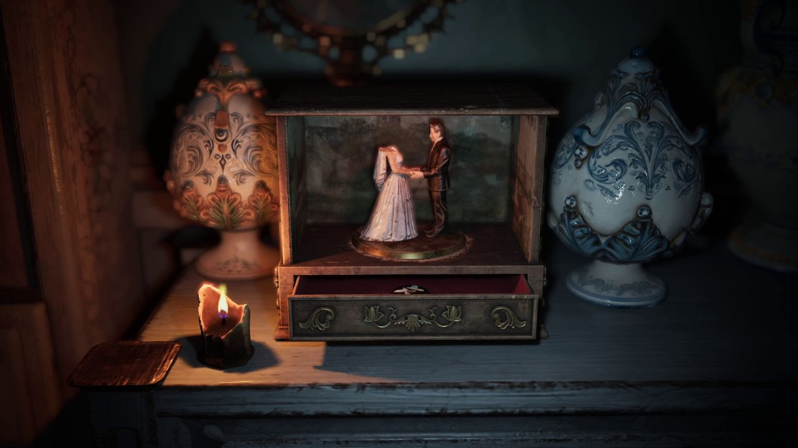
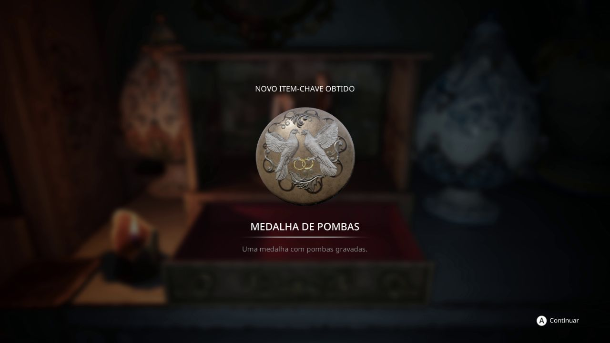
3. Convento e primeiro enigma dos pilares
Objetivo: liberar a passagem tomada pela planta e resolver os pilares.
- No convento, a retrocognição mostra lembranças do passado. Use-a nos pontos brilhantes para ouvir as vozes e liberar o caminho.
- Uma planta bloqueia a porta. Siga a lembrança do corredor para encontrar o Fluido Misterioso e use-o na planta.
- Na sala dos quatro pilares, leia o livro no pedestal. Cada pilar gira com uma série de figuras. Pare cada um na figura certa, da esquerda para a direita: Mulher, Cobra, Caveira e Coração.
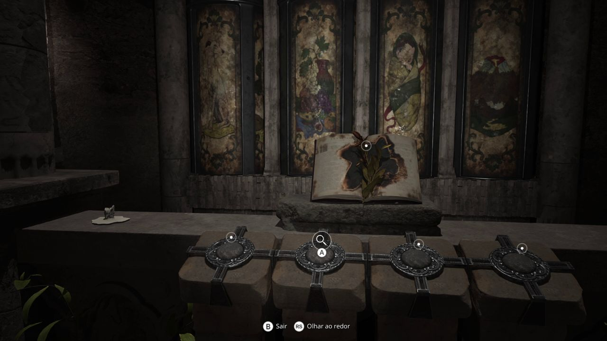
4. Cofre da família e a porta da frente
Objetivo: achar os slides, abrir o cofre de Boris Ashmann e destrancar a porta da frente.
- A porta do escritório da biblioteca está sem maçaneta. Vá aos banhos (hammam), perto do salão de recepção, e bata três vezes no mosaico das ninfas na cachoeira. A maçaneta cai do mosaico. Na gameplay, uma segunda freira estava dormindo ali e acordou com o barulho. Tenha um item de defesa em mãos.
- Coloque a maçaneta na porta do escritório, ao lado da escada da biblioteca. Pegue os slides na mesa e encaixe-os no projetor.
- Os slides mostram pares de figuras. Some cada par: pássaros com flores, mariposas com chamas, peixes com folhas.
Cofre: 73, 31, 52
| Slide | Contagem | Número |
|---|---|---|
| Pássaros e flores | 7 pássaros e 3 flores | 73 |
| Mariposas e chamas | 3 mariposas e 1 chama | 31 |
| Peixes e folhas | 5 peixes e 2 folhas | 52 |
O bilhete fala em árvores e flores, mas o slide mostra pássaros. Use os pássaros. O cofre fica atrás da pintura de pássaros em voo, na Sala delle Meraviglie: empurre o quadro para o lado e gire o disco até 73, 31 e 52. Dentro está a carta de Boris e o Anel da Família Ashmann.
Use o anel na porta trancada que leva para fora e corra até o carro. A cena que vem em seguida devolve Susan à villa, agora com uma nova perseguidora.
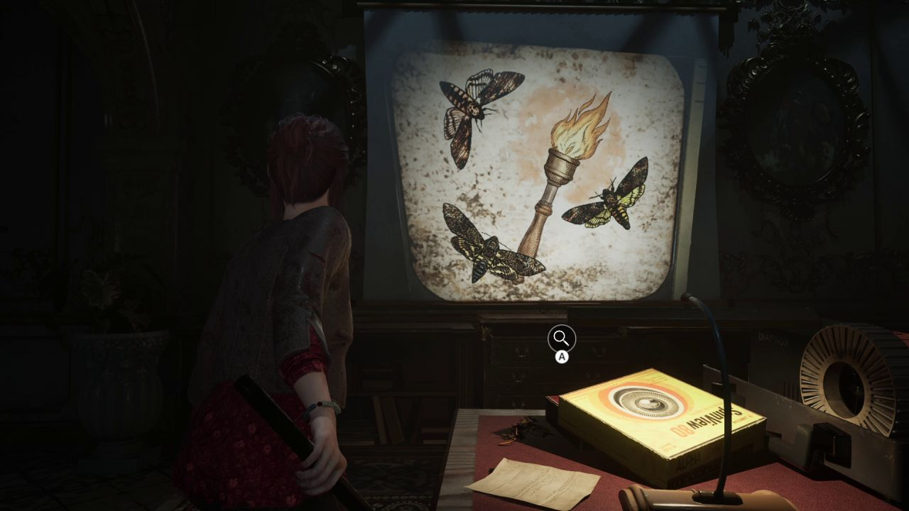
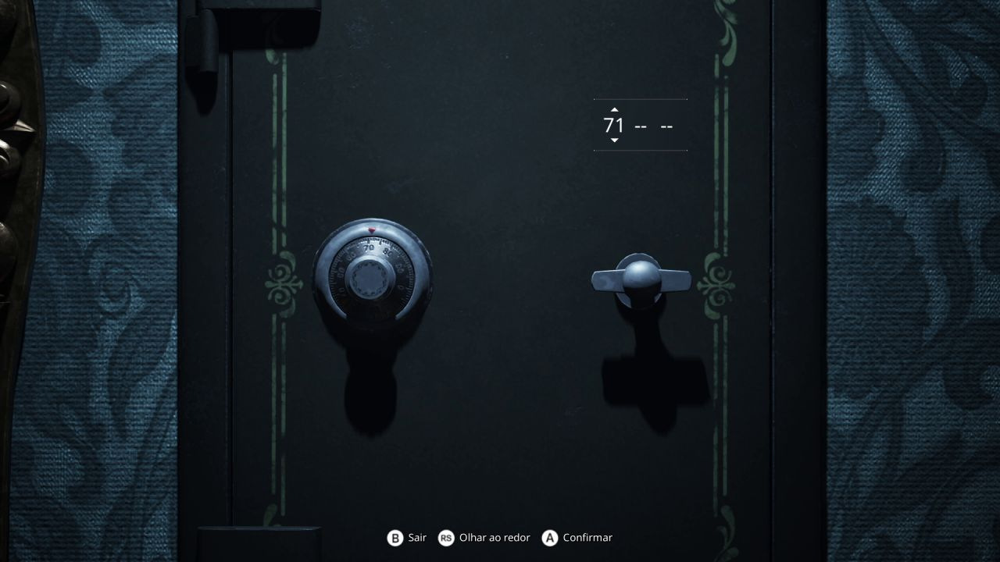
5. Segredos nos espelhos
Objetivo: ganhar o poder dos espelhos, entrar no quarto de Lindsay e recuperar o colar.
- Inspecione o metrônomo do palco. Ele libera Segredos nos Espelhos: olhe pelos espelhos para revelar portas, chaves e objetos escondidos no reflexo.
- No corredor das freiras, use o espelho para achar o compartimento com a chave do quarto da Irmã Lindsay (Suor Lindsay). No quarto, recolha a Estatueta de Jesus e encaixe-a no espaço vazio da porta dupla.
- A sala seguinte repete o enigma dos pilares, mas as figuras ficam invisíveis. Vá até o espelho no fundo da sala e olhe por ele. Cada pilar mostra a figura no reflexo; pare cada um quando a figura ficar de frente.
- Pegue o Colar Artesanal na caixa e coloque-o na estátua da freira na sala ao lado. A cena leva de volta à villa.
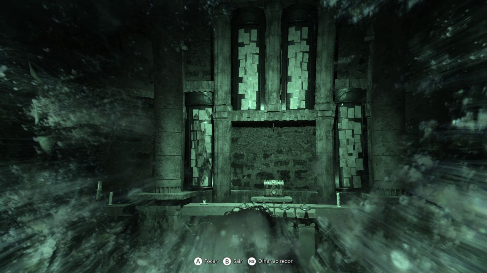
6. Ala residencial e a Noiva
Objetivo: entrar na ala residencial e começar a reunir as marionetes.
- Siga os espelhos pela mansão: eles revelam passagens novas, inclusive uma pela lareira da galeria. A Noiva, nova perseguidora, ronda essa parte. Ela é mais lenta que a freira, mas ouve correntes e passos. Espere-a passar escondido.
- Na sala de pesquisa, a Chave da Coroa está entre as fotos penduradas no varal. Use-a na saída com a luz vermelha.
- A porta da ala residencial está trancada. Entre pela janela perto dos barris, desça até a lavanderia e suba para ver a porta do Eclipse. A chave de Glória fica no estúdio do quarto de Stefano, que você alcança rastejando pela abertura baixa do banheiro.
- No quarto de brinquedos, o espelho revela o pequeno teatro. Ali está A Filha, a primeira marionete. O bilhete do teatro explica que os ganchos só aceitam as marionetes na ordem certa.
- No quarto destruído, use o espelho na estátua para pegar O Pai. Fique atento: uma freira com lança-chamas aparece nessa área. Se ela não tiver visto você, fique escondido e espere.
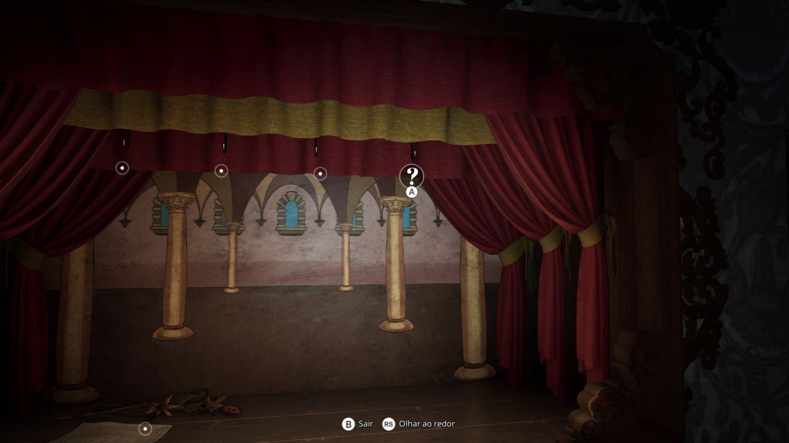
7. Adega, metrônomo quebrado e mariposas
A escada que confunde
Na gameplay, esta parte travou uma partida inteira. A ala tem duas escadas que descem e são parecidas. Uma termina numa porta trancada sem nada. A outra leva à adega e ao resto da área. Se você só encontra portas trancadas, volte e desça pela outra escada.
- Na adega, perto do metrônomo quebrado, pegue a chave pequena com chaveiro musical.
- Use-a na caixa da sala de música e pegue o braço do metrônomo.
- Instale o braço no metrônomo quebrado. Ele libera a Manipulação de Mariposas: interaja com um ninho para guiar as mariposas por tempo limitado e use-as nos casulos que bloqueiam portas e passagens.
A partir daqui, a freira passa a soltar mariposas que agarram você. Para se soltar, aperte o botão indicado muito rápido. Use o tempo das mariposas para ir direto ao casulo; não pare para explorar no caminho.
↑ Índice8. Monta-cargas e marionetes
Objetivo: completar as quatro marionetes e abrir a porta secreta.
- Pegue a alavanca e instale-a no monta-cargas da sala de jantar do andar de cima. Acione-o para derrubar a marionete da Mãe na cozinha, um andar abaixo.
- A Mãe está quebrada. Leve-a à bancada de trabalho e conserte-a com o poder das mariposas.
- O Filho está no compartimento do motor do carrinho amarelo de brinquedo.
- No teatro, pendure da esquerda para a direita: Mãe, Pai, Filho e Filha. A porta secreta abre ao lado.
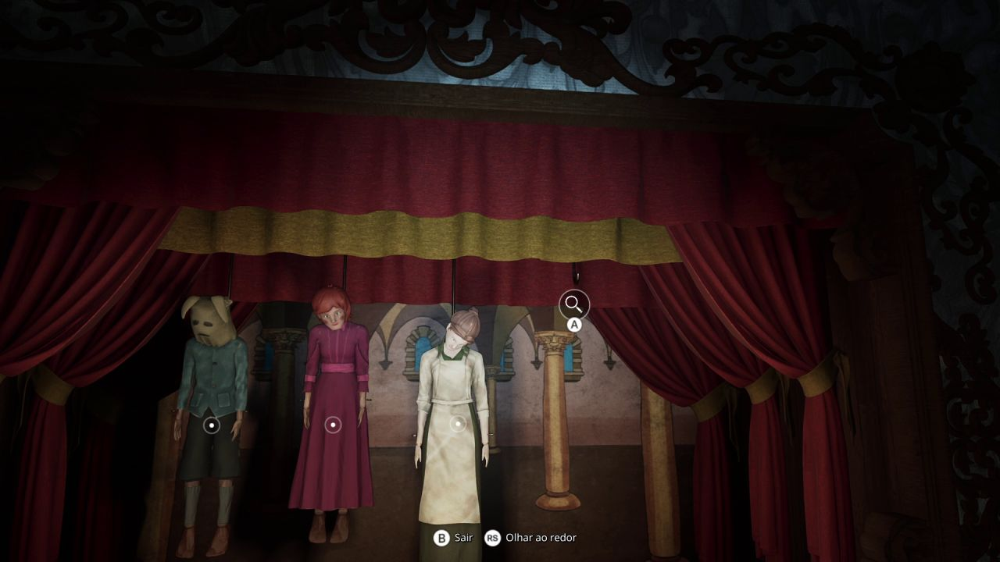
9. Pilares das chamas e porta alquímica
Objetivo: abrir a porta alquímica do salão de recepção.
- Primeiro guie as mariposas para liberar os controles. Depois gire os quatro pilares até que todos mostrem a chama de frente.
- Leia o poema dos quatro sinais. Ele dá a ordem dos símbolos da porta: Caveira, Água, Sol nascente e Coração. Não mexa no fogo nem na lua.
- O mecanismo fica na capela. Na gameplay, a porta não reagia porque faltava apertar um botão de pedra no meio do mecanismo, quase invisível. Se nada acontecer, procure esse botão.
- Acione os quatro símbolos na ordem. A porta misteriosa da villa se abre.
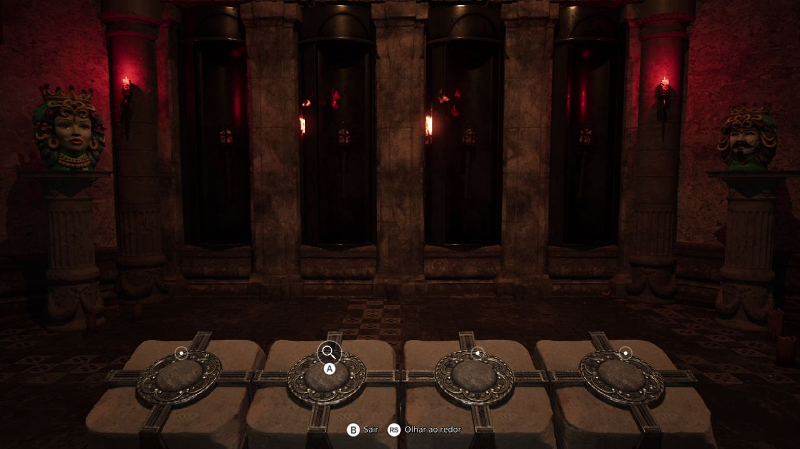
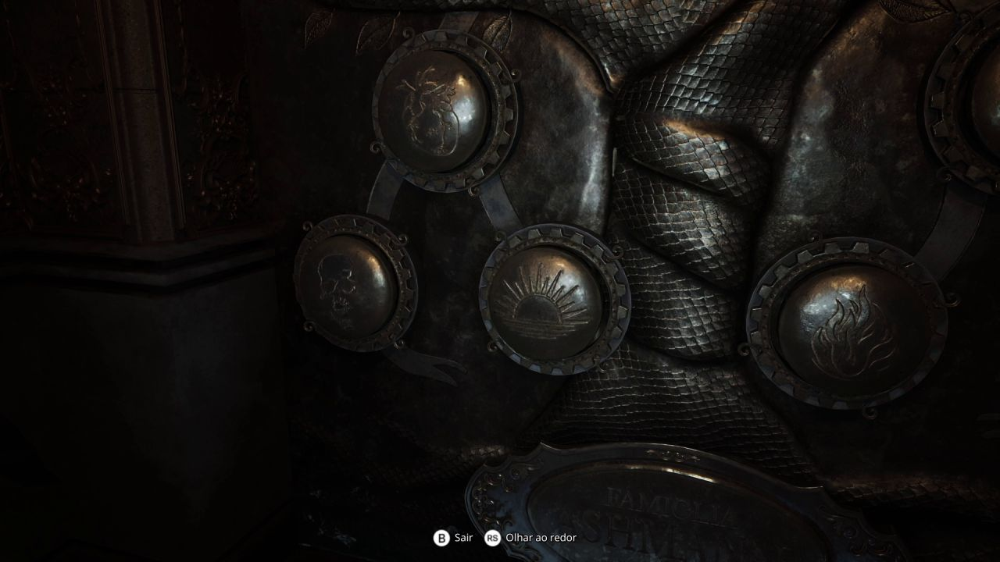
10. Catacumbas e final
Objetivo: abrir o portão das catacumbas e chegar ao final.
- As catacumbas ainda têm uma freira rondando. Explore com a lanterna apagada e marque os esconderijos antes de avançar.
- Reúna a corda e a polia. Uma delas fica atrás de um espelho coberto por casulo: o ninho de mariposas mais próximo está longe. Pegue as mariposas e vá em linha reta, sem parar, até o espelho.
- Prenda corda e polia no mecanismo do portão, perto do ponto de salvamento, e acione-o.
- Assista à sequência final. Depois da cena, você controla a Freira Vermelha e precisa caçar as três noviças que fogem: uma se esconde num armário, outra debaixo de um móvel e a última está mais adiante, rezando. Use os comandos de apertar repetidamente quando eles aparecerem.
- O jogo tem um único final. Fique até o fim: há uma cena depois dos créditos.
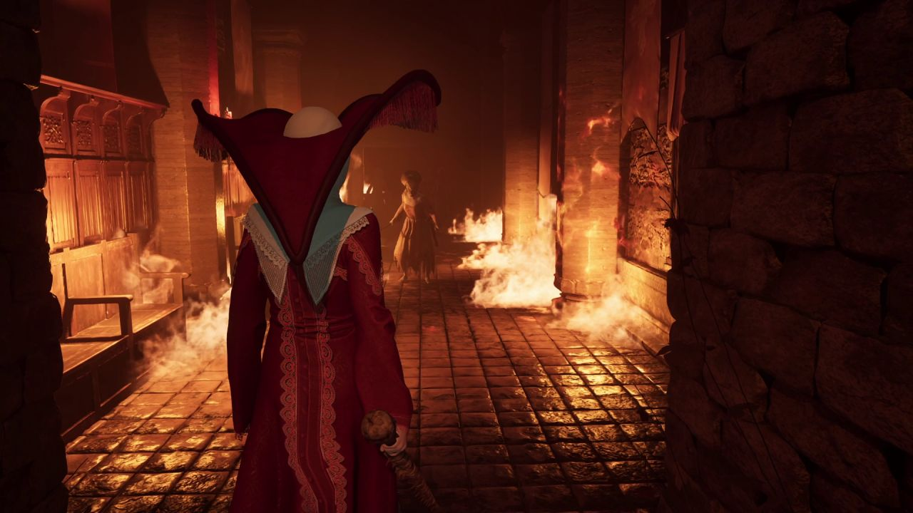
Referências de rota e enigmas. Todos os enigmas — TPose Gaming, Trecho final — TPose Gaming, Detonado, parte 2 — Into Indie Games.
↑ Voltar ao topo